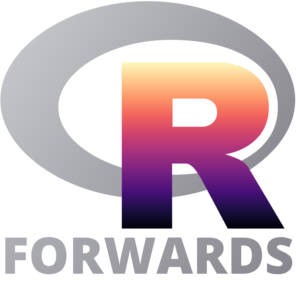

class: center, middle, inverse, title-slide # Diversity and Inclusion in the R Community ### <span style="font-size:40px;font-weight:600">Heather Turner</span> ### <i class="fab fa-twitter "></i> <a href="https://twitter.com/heathrturnr">@HeathrTurnr</a><br><br>.pull-left-30[.right[]].pull-right-64[.left[<br><span style="font-size:30px">Forwards taskforce</span> <i class="fab fa-twitter "></i> <a href="https://twitter.com/R_Forwards">@R_Forwards</a>]]<br><br><br><br>7 March 2020<br><span style="font-size:50px;font-weight:600"><i class="fas fa-link "></i> <a href="heatherturner.net/talks/satRdayJoburg2020">heatherturner.net/talks/satRdayJoburg2020</a></span> --- layout: true .footer[<i class="fas fa-link "></i> [heatherturner.net/talks/satRdayJoburg2020](https://www.heatherturner.net/talks/satRdayJoburg2020) <i class="fab fa-twitter "></i> [@HeathrTurnr](https://twitter.com/heathrturnr) <i class="fab fa-twitter "></i> [@R_Forwards](https://twitter.com/R_Forwards) ] --- # Background Action from the community initially focused on women .pull-left[ - heR panel at useR! 2014 raised awareness of gender disparity - Forwards taskforce set up in December 2015 - R-Ladies Global set up in August 2016 ] .pull-right[  ] --- # Forwards (est 2015) R Foundation taskforce to widen participation of underepresented groups - Social media - Twitter: @R_Forwards - Blog: https://forwards.github.io/blog/ - Community - Conferences - On-ramps - Surveys - Teaching --- # Other initiatives - Wider Community - Conferences/workshops - Women in Data Science (est 2015), Black in AI (est 2017) - Meetups - Women in Machine Learning & Data Science (est 2013), Queer in AI (est 2018) - The Carpentries (est 2018, Equity, Inclusion, and Accessibility Roadmap 2019) - NUMFocus Diversity & Inclusion in Scientific Computing (DISC) (est 2017) --- # Other initiatives - R Community - rOpenSci - unconf (est 2014) - Community Manager (since 2016) - Tidyverse developer day (est 2019) - R Consortium Diversity & Inclusion Working Group (est 2018) --- # R-Ladies Currently 188 chapters  --- # R-Ladies Chapters spread over 52 countries  --- # Current Challenges -- User Community - outreach beyond white women -- Developer community - widening participation from underrepresented groups --- class: inverse middle # User Community --- class: middle # Underserved Regions --- # useR! Regional Hubs - Pilot in Munich this year - Hoping to scale up next year to include hubs in e.g. Africa, Latin America, Asia - reduce environmental cost with maximum in-person interaction - reduce financial cost - reduce travel time - potential to allow languages other than English - potential to incorporate remote participation - avoid visa issues --- # AfricaR Community ([@AfricaRUsers](https://twitter.com/AfricaRUsers)) .pull-left[ - Started in 2019 - Newly expanded leadership team - **Shelmith Kariuki - Kenya** - **Denis Irorere - Nigeria** - Mohammed Ali - Egypt - Ahmadou Dicko - Senegal - Anicet Ebou - Ivory Coast - Nelda Limilimi - Uganda - Vebashini Naidoo - South Africa ] .pull-right[ .center[New leadership team]  ] ??? - have been able to develop several RUGs and had two SatRdays. - been able to really bring together R users in their respective regions, who did not know each other before - leadership has representatives from Egypt, Senegal, Ivory Coast, Nigeria, Uganda, Kenya and South Africa --- # AfricaR Activities - 2019: several new RUGs, two satRdays - Plans for 2020: - Write governing documents (mission statement, CoC) - Rotating curator Twitter account - Tutorials in French - Website (events calendar, blog) - Package(s) to address African needs, e.g. NLP package that supports Arabic, Swahili, etc. --- # Get Involved .pull-left[ - Follow [@AfricaRUsers](https://twitter.com/AfricaRUsers) - Share your contacts - Potential speakers/hosts for meetups, workshops - Reuse your talks/workshops - Present at RUGs when travelling - Offer to present remotely - Join in with AfricaR plans for 2020 - Help with organization of community finances? ] .pull-right[ <a class="twitter-timeline" data-tweet-limit="1" href="https://twitter.com/AfricaRUsers?ref_src=twsrc%5Etfw">Tweets by AfricaRUsers</a> <script async src="https://platform.twitter.com/widgets.js" charset="utf-8"></script> ] --- class: middle # Minority Ethnic/Racial Groups --- # The Importance of Community <blockquote class="twitter-tweet tw-align-center" width = "450"><p lang="en" dir="ltr">Dear Danielle,<br><br>Remember these incredibly brilliant, talented, and kind women data scientists whenever you feel like “the only one,” on a team or in a space. Thanks to <a href="https://twitter.com/hashtag/rstudioconf2020?src=hash&ref_src=twsrc%5Etfw">#rstudioconf2020</a> for bringing us together! <a href="https://twitter.com/hashtag/rladies?src=hash&ref_src=twsrc%5Etfw">#rladies</a> <a href="https://t.co/sA312EibH5">pic.twitter.com/sA312EibH5</a></p>— Danielle Smalls-Perkins (@smallperks) <a href="https://twitter.com/smallperks/status/1222380156347547649?ref_src=twsrc%5Etfw">January 29, 2020</a></blockquote> <script async src="https://platform.twitter.com/widgets.js" charset="utf-8"></script> --- # MiR Community Medium post by Danielle Smalls-Perkins and Dorris Scott: [MiR: A Community for Underrepresented Minority useRs](https://twitter.com/Dorris_Scott/status/1233475276274880518?s=20) - Conference support: abstract review - Mi-useR Slack: network and share opportunities - Social media and blog posts: highlight Mi-useRs - Mi-useR directory: members, speakers and Rstudio trainers - MiR dev days: making contributions to the R open source ecosystem --- # Get involved - Let people in your workplace/RUG/etc know about MiR - Join MiR as a minority useR or ally: [bit.ly/2unAM8b](http://www.bit.ly/2unAM8b) - Follow [@Dorris_Scott](https://twitter.com/Dorris_Scott) and [@smallperks](https://twitter.com/smallperks) - Support the MiR initiatives --- class: middle # Disabled and Deaf useRs ??? - Some people do not identify as disabled (e.g. some Deaf, Blind, Autisitic folk etc) - Some prefer person-first, some prefer identity first --- # R for Blind Users Jonathan Godfrey has provided many resources - [Let's Use R Now (LURN)](https://r-resources.massey.ac.nz/lurn/front.html) e-book for blind users - [BlindRUG](https://www.nfbnet.org/mailman/listinfo/blindrug_nfbnet.org) mailing list - BrailleR package - text descriptions of graphics - WriteR software to produce R markdown documents - Tips for writing [accessible markdown documents](https://r-resources.massey.ac.nz/rmarkdown/) --- # Accessibility of R Conferences/Events Liz Hare has been leading the development of [best practices for events](https://github.com/forwards/event_best_practices/blob/master/DRAFTEventBestPracticesDisability.md) Informed call for proposals for useR! 2021, e.g. asking if venue had - step-free access - disabled parking close to venue - gender-neutral bathrooms - policy allowing children on premises Aim to integrate recommendations throughout organization for 2021. --- # What you can do - Educate yourself/others on accessibility - Expect disabled people at your events - including as speakers, chairs, committee members, etc - remove barriers to inclusion, don't wait for people to ask - Give feedback on/help develop best practices - (R-specific) advice for creating accessible/inclusive presentations - advice for social media managers ??? - chicken-and-egg problem (don't see them so don't accommodate; don't see them because their no accommodated) - planning with accessibility in mind from the start saves time and money over retrofitting. - remove barriers --- # General tips for creating inclusive communities - Organizers: use best practices in your events - Noa Tamir is working on [guide for meetups](https://github.com/forwards/event_best_practices/blob/meetup-advice/meetup_best_practices.md) - Expand your network - Support the initiatives of underrepresented groups - Share opportunities - Do what you can to lessen/share the burden ??? sponsoring --- class: inverse middle # Developer Community --- class: middle # Developer Meetings --- # Developer meetings co-located with useR! Directions in Statistical Computing (2014-2019) - Both invited speakers and invited participants - Mostly R Foundation members, plus special guests - Prior to useR! R Implementation Optimization and Tooling - Open call for speakers, open to useR! participants - Parallel with useR! --- # Barriers to Inclusion Invited workshop - Special guests can feel out of place - Community members that would be interested are left out - Information is not shared Satellite meetings - Not same effort to reach out to underrepresented groups - Very little promotion to general community - Details hidden away on separate website Hard for people from underserved regions to get involved --- # Work in Progress DSC 2020 - Speakers are invited, but anyone can attend RIOT 2019 - First time RIOT was advertised on useR! 2019 website Room for improvement - Better promotion of events, with a focus on diversity - Alternative formats (e.g. breakout session) to enable new contributors - Sharing information, e.g. recorded talks, blog post --- class: middle # Package Development --- # Package development workshops Forwards package development [workshop materials](https://github.com/forwards/workshops/tree/master/York2020_01) - Full day and 2 hour versions - Workshop run in Auckland, Budapest, Chicago, York, Johannesburg - Upcoming Montevideo - Working on [guide](https://forwards.github.io/workshops-guide/) for others to run workshop at RUGs, R-Ladies groups, universities, etc --- # Reluctance/Nervousness to Submit to CRAN - Bad experience on CRAN/official mailing list - Decide to not to publish/host on GitHub - Hoops to jump through - A lot of information: CRAN Repository Policy, Checklist for New Submissions - Feedback can be unpredictable and underspecified - Involved process: updating NEWS, DESCRIPTION, running checks and tests - R-package-devel provides limited support - can still be an intimidating experience - focus on specific questions --- # Basic Onboarding? - Potential for basic onboarding service for first-time (underrepresented) submitters - guidance through checklist - help with errors/issues that come up in checks/tests - help solve issues identified by CRAN - give guidance on resubmission as they "graduate" - Work with CRAN support team to keep Checklist for New Submissions up-to-date - c.f. [collaborative list of things to check](https://github.com/ThinkR-open/prepare-for-cran) --- class: middle # R Core --- # Python Core Dev: Adding Women to the Team > I want at least two female core Python Devs in the next year > > — <cite>PyCon 2015, Guido van Rossum</cite> From [Victor Stinner's PyCon 2019 talk](https://www.youtube.com/watch?v=O3UmUj9h_Eo): 2016: 0 women core devs<br> 2017: 2 women core devs<br> 2018: 4 women core devs<br> ~ 30 active core devs ??? Benevolent dictator for life --- # Process of Becoming a Python Core Developer .pull-left[ Mariatta Wijaya described process in her [PyCon 2018 talk](https://www.youtube.com/watch?v=hhj7eb6TrtI) - Read the Dev Guide [devguide.python.org](https://devguide.python.org/) - Join core-mentorship and python-dev - Find issue in bugs.python.org - Propose pull request *All* these steps can be done by non-core members ] .pull-right[  @mariatta ] --- # Getting to be Invited to Be a Python Core Developer Promotion to core dev depends on trust Trust earnt by core devs getting to know people via - Pull requests (PRs) - PR review - Interacting on mailing lists, IRC, Zulip - Becoming a Developer on issue tracker (able to triage issues) --- # Mentoring Victor Stinner in his [PyCon 2019](https://www.youtube.com/watch?v=O3UmUj9h_Eo) proposes mentoring as a scalable solution to both *core dev burnout* and *lack of diversity* Recent/current work by Python Core devs ([Ref1](https://lwn.net/Articles/757715/), [Ref2](https://pythondev.readthedocs.io/community.html)) - Move to GitHub (2017) - Document promotions process (dev guide) - Mentoring guide - Contributor tutorial - Core dev office hours (public and private) - Adding enforcement procedure to code of conduct ??? typically a few emails a week, less onerous than GSoC --- # More Ideas from Other Communities Rust: [mentored projects](https://blog.rust-lang.org/2017/06/27/Increasing-Rusts-Reach.html) (diversity scholarships) - mentees invest 2-5 hours per week over 3 months - expenses paid scholarship to Rust conference following year Various: [outreachy projects](outreachy.org) for underrepresented groups - paid internship, 40 hours per week over 3 months - require mentor(s) to invest 5 hours per week ??? vs 2-3 hours for google summer of code project --- # Outreach from R Core - Call for help [Reviewing Bug Reports](https://developer.r-project.org/Blog/public/2019/10/09/r-can-use-your-help-reviewing-bug-reports/index.html) (R Developer Blog, October 2019) - At useR! 2020 - outreach slot adjoining keynote talk - parallel session dedicated to R Core speakers - tutorial by Tomas Kalibera on contributing to base R - Considering "Requests For Proposals" on perceived deficiencies in R - community teams propose solutions --- # Summary We can all support community-driven efforts for better inclusion of under-represented groups - Forwards is playing its part here A lot of ideas from outside and inside R community of how to get more contributors from under-represented groups - Currently don't have enough active members on Forward on-ramps team - Needs active participation of R Core and other contributors